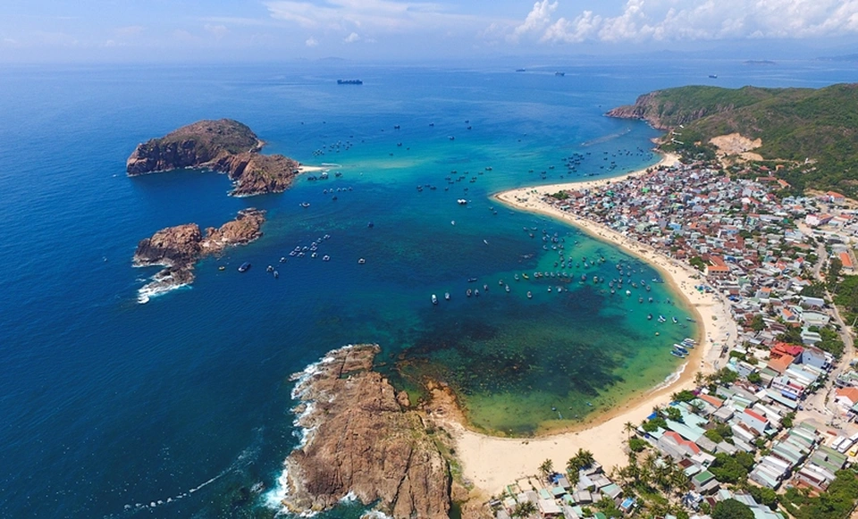
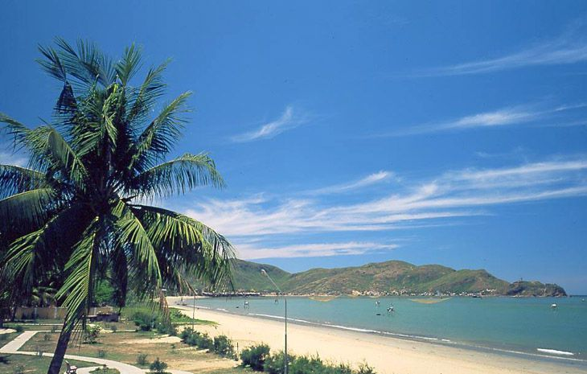
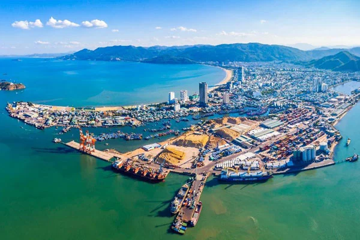
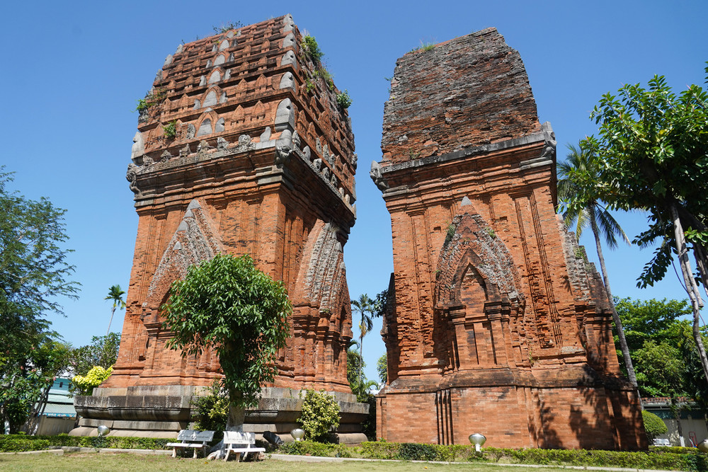
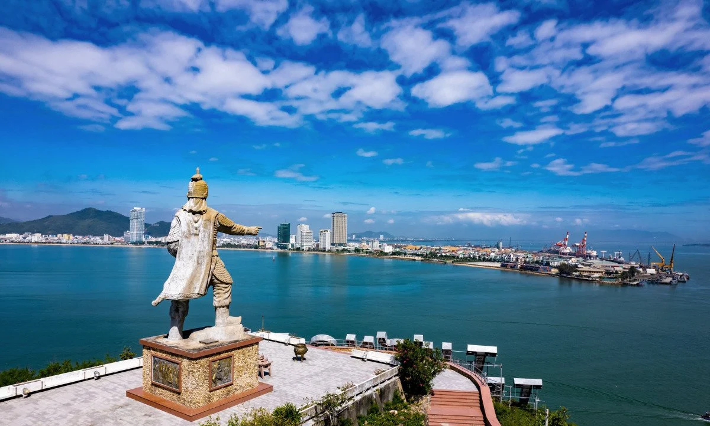

Du khách nên ghé Kỳ Co, Eo Gió – những địa điểm nổi bật với làn nước trong xanh và cảnh quan hoang sơ tuyệt đẹp.
Ngoài ra, bạn có thể tham quan Ghềnh Ráng Tiên Sa, mộ Hàn Mặc Tử hoặc check-in tại các cung đường ven biển thơ mộng.
Ẩm thực Quy Nhơn nổi tiếng với hải sản tươi sống, bánh xèo tôm nhảy, bún chả cá và nem chợ Huyện.
Bạn nên thưởng thức tại các quán ven biển hoặc khu chợ địa phương để cảm nhận hương vị chân thật nhất.
Quy Nhơn mang đậm dấu ấn văn hóa Chăm Pa với các tháp Chăm cổ kính như Tháp Đôi.
Đây cũng là vùng đất võ Bình Định nổi tiếng với truyền thống võ thuật lâu đời.
Nhà thơ Hàn Mặc Tử gắn liền với vùng đất này, góp phần tạo nên nét văn hóa thi ca đặc sắc.
Các lễ hội truyền thống và văn hóa dân gian vẫn được gìn giữ và phát huy.
Quy Nhơn sở hữu vẻ đẹp hoang sơ với biển xanh, cát trắng và những ghềnh đá độc đáo.
Các địa danh như Kỳ Co, Eo Gió hay Hòn Khô tạo nên bức tranh thiên nhiên sống động và ấn tượng.
Không gian yên bình, ít ồn ào rất phù hợp cho nghỉ dưỡng và thư giãn.
Bình minh và hoàng hôn trên biển là những khoảnh khắc tuyệt đẹp không nên bỏ lỡ.
Quy Nhơn có khí hậu nhiệt đới với hai mùa rõ rệt, thời điểm lý tưởng để du lịch là từ tháng 3 đến tháng 9.
Người dân nơi đây hiền hòa, chân chất và rất thân thiện với du khách.
Sự giản dị và mến khách tạo nên ấn tượng tốt đẹp cho những ai từng ghé thăm.




